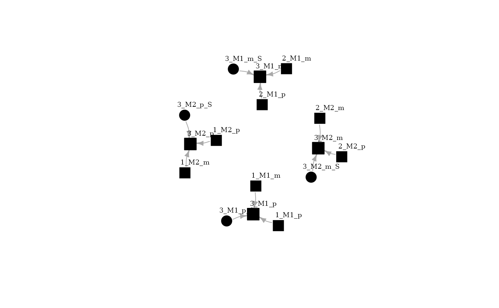

Installation
At first, fbnet library should be loaded. You can install fbnet pasting the following lines:
install.packages("fbnet")
library(fbnet)Setting up the pedigree
“Toyped” is a pedigree example provided by fbnet package. Also, fbnet could work with pedigree object produced by pedtools R package. As could be observed, “Toyped” is a pedigree with three members (Ids 1, 2 and 3). FID is the father ID, MID is the mother ID. Therefore, 1 and 2 are founders and ID 3 parents are 1 and 2.
toyped[["pedigree"]]
#> ID FID MID SEX AFF
#> [1,] 1 0 0 1 1
#> [2,] 2 0 0 2 1
#> [3,] 3 1 2 1 1The first step for fbnet pedigree processing is initialize the Bayesian Network through initBN function. Once generated, pbn object stores some parameters, such as reference population allele frequencies. In the example two markers are analyzed, M1 and M2, with four alleles each one.
pbn <- initBN(toyped)
pbn[["alelFreq"]]
#> $M1
#> A B C D
#> 0.1 0.2 0.3 0.4
#>
#> $M2
#> A B C D
#> 0.25 0.25 0.25 0.25The mother (ID 2) is genotyped, being M1_p, mothers paternal allele and M1_m mothers maternal allele.
pbn[["markerEvidence"]]
#> M1_p M1_m M2_p M2_m
#> 2 "D" "D" "B" "C"Building the Bayesian Network
BuildBN function perform the computations for building the Bayesian network. Query person should be defined, in this case it is the son (ID 3). Each allele of each individual represent a node in the network, edges represent conditional dependency. Using igraph package, the network could be plotted. It could be observed that the four alleles from individual 3 are conditioned by maternal alleles, paternal alleles and a linkage variable (s).
For visualizing the network igraph package should be installed and loaded.
install.packages("igraph")
library(igraph)
bnet <- buildBN(pbn,QP=3)
plot(bnet[["DAG"]], layout=layout_with_fr, vertex.size=15,
vertex.label.dist=2.5, vertex.label.color = "black", vertex.label.size = 24, vertex.color="black", edge.arrow.size=0.5)
Computing genotype conditional probability tables
The Bayesian network allows computing allele conditional probability tables (CPTs). This process could be computationally expensive. After building CPTs, variable elimination approach used, it is a process by which we successively remove variables from the Bayesian network while maintaining its ability to answer queries of interest.
Analyzing conditioned probabilities
Once computed, resQ contains conditioned genotype probabilities for individual 3, based on the available evidence in the pedigree. The output allows us to compare conditioned probabilities with reference population data. Firstly, some data formatting should be done.
Some packages must be loaded for data analyses and plots.
Then, resQ output could be analyzed as follows:
Mprob1 <- resQ[["3_M1_m"]]
Fprob1 <- resQ[["3_M1_p"]]
names(Mprob1) <- c("V1", "V2")
names(Fprob1) <- c("V1", "V2")Probabilities are normalized to sum 1.
Fprob1 <- mutate(Fprob1, V2 = V2*(1/sum(Fprob1$V2)))
Fprob1 <- mutate(Fprob1, V3 = "Paternal allele")
Mprob1 <- mutate(Mprob1, V2 = V2*(1/sum(Mprob1$V2)))
Mprob1 <- mutate(Mprob1, V3 = "Maternal allele")
Pop <- as.data.frame(cbind(names(pbn[["alelFreq"]]$M1), pbn[["alelFreq"]]$M1))
Pop <- mutate(Pop, V3 = "Population")
Mprob1<-rbind(Mprob1,Pop)
Fprob1<-rbind(Fprob1,Pop)Maternal allele probability for Marker 1 is strongly conditioned and differs from population. In contrast, paternally conditioned allele is not different from the population due to the lack of genetic evidence.
p1 <- ggplot(Mprob1,
aes(x = V1, y = as.numeric(V2), fill= V3)) +
geom_bar(position='dodge', stat = "identity", width=0.5) +
theme_classic() + xlab("Allele") + ylab("Probability")
p2 <- ggplot(Fprob1,
aes(x = V1, y = as.numeric(V2), fill= V3)) +
geom_bar(position='dodge', stat = "identity", width=0.5) +
theme_classic() + xlab("Allele") + ylab("Probability")
p1 + p2For marker 2, the same process.
Mprob2 <- resQ[["3_M2_m"]]
Fprob2 <- resQ[["3_M2_p"]]
names(Mprob2) <- c("V1", "V2")
names(Fprob2) <- c("V1", "V2")
Fprob2 <- mutate(Fprob2, V2 = V2*(1/sum(Fprob2$V2)))
Fprob2 <- mutate(Fprob2, V3 = "Paternal allele")
Mprob2 <- mutate(Mprob2, V2 = V2*(1/sum(Mprob2$V2)))
Mprob2 <- mutate(Mprob2, V3 = "Maternal allele")
Pop2 <- as.data.frame(cbind(names(pbn[["alelFreq"]]$M2), pbn[["alelFreq"]]$M2))
Pop2 <- mutate(Pop2, V3 = "Population")
Mprob2<-rbind(Mprob2,Pop2)
Fprob2<-rbind(Fprob2,Pop2)And results are plotted as follows:
p1 <- ggplot(Mprob2,
aes(x = V1, y = as.numeric(V2), fill= V3)) +
geom_bar(position='dodge', stat = "identity", width=0.5) +
theme_classic() + xlab("Allele Marker 1") + ylab("Probability")
p2 <- ggplot(Fprob2,
aes(x = V1, y = as.numeric(V2), fill= V3)) +
geom_bar(position='dodge', stat = "identity", width=0.5) +
theme_classic() + xlab("Allele Marker 2") + ylab("Probability")
p1 + p2Analyzing several markers
Moreover, we can analyze and plot genotype probability matrix considering both markers. We firstly calculate the genotype probabilities for marker 1.
M1Genopop<- as.data.frame(as.table(outer(as.numeric(Pop$V2), as.numeric(Pop$V2))))
M1Genopop<- mutate(M1Genopop,Geno = str_c(M1Genopop$Var1,"/",M1Genopop$Var2))
M2Genopop<-as.data.frame(as.table(outer(as.numeric(Pop2$V2), as.numeric(Pop2$V2))))
M2Genopop<- mutate(M2Genopop,Geno = str_c(M2Genopop$Var1,"/",M2Genopop$Var2))
M1_vec <- M1Genopop$Freq
names(M1_vec) <- M1Genopop$GenoSame computations could be done for marker 2
M2_vec <- M2Genopop$Freq
names(M2_vec) <- M2Genopop$Geno
GenoPop <- as.data.frame(as.table(outer(M1_vec,M2_vec)))
A <- filter(Mprob1, V3 == "Maternal allele")
B <- filter(Fprob1, V3 == "Paternal allele")
C <- filter(Mprob2, V3 == "Maternal allele")
D <- filter(Fprob2, V3 == "Paternal allele")
M1GenoPed<- as.data.frame(as.table(outer(as.numeric(A$V2), as.numeric(B$V2))))
M1GenoPed<- mutate(M1GenoPed,Geno = str_c("D","/",M1GenoPed$Var2))
M2GenoPed<-as.data.frame(as.table(outer(as.numeric(C$V2), as.numeric(D$V2))))
M2GenoPed<- mutate(M2GenoPed,Geno = str_c(M2GenoPed$Var1,"/",M2GenoPed$Var2))And both markers genotype probabilities are computed as follows.
M1_vec_ped <- M1GenoPed$Freq
names(M1_vec_ped) <- M1GenoPed$Geno
M2_vec_ped <- M2GenoPed$Freq
names(M2_vec_ped) <- M2GenoPed$Geno
GenoPed <- as.data.frame(as.table(outer(M1_vec_ped,M2_vec_ped)))The following plots shows the probability for each genotype conditioned by the pedigree evidence or by the reference population.
p3 <- ggplot(GenoPop, aes(x = Var2, y = Var1)) +
geom_raster(aes(fill=Freq)) +
scale_fill_gradient(low="grey90", high="blue") +
labs(x="Marker 2", y="Marker 1", title="Population") +
theme_bw() + theme(axis.text.x=element_text(size=5, angle=0, vjust=0.3),
axis.text.y=element_text(size=5),
plot.title=element_text(size=10))
p4 <- ggplot(GenoPed, aes(x = Var2, y = Var1)) +
geom_raster(aes(fill=Freq)) +
scale_fill_gradient(low="grey90", high="blue") +
labs(x="Marker 2", y="Marker 1", title="Conditioned") +
theme_bw() + theme(axis.text.x=element_text(size=8, angle=0, vjust=0.3),
axis.text.y=element_text(size=8),
plot.title=element_text(size=10))
p3 + p4